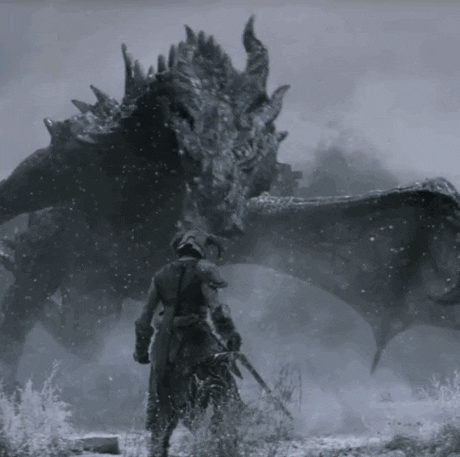
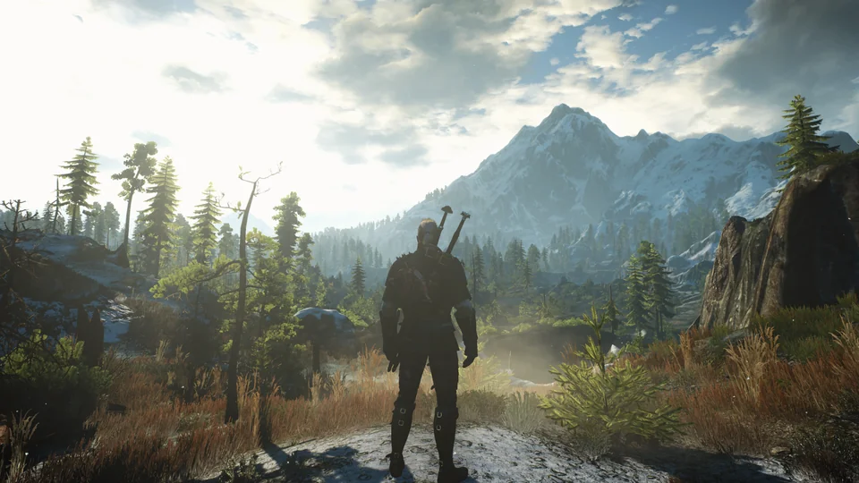
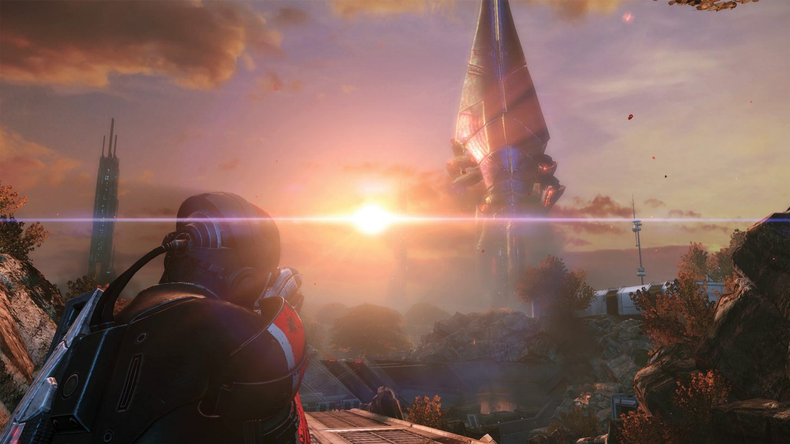

The Elder Scrolls V: Skyrim
Skyrim is an open-world RPG developed by Bethesda Game Studios. The game takes place in the province of Skyrim, where players can create and customize their own character to explore the world, complete quests, and engage in combat with various enemies.

The Witcher 3: Wild Hunt
The Witcher 3 is an action RPG developed by CD Projekt Red. The game follows the story of Geralt of Rivia, a monster hunter for hire, as he searches for his missing adopted daughter. The game features an open world, various NPCs to interact with, and a branching storyline that is affected by player choices.

Mass Effect
Mass Effect is a sci-fi RPG developed by BioWare. The game follows Commander Shepard, a human soldier who is tasked with saving the galaxy from a race of sentient machines called the Reapers. The game features an expansive universe to explore, various alien races to interact with, and a deep and complex storyline.
